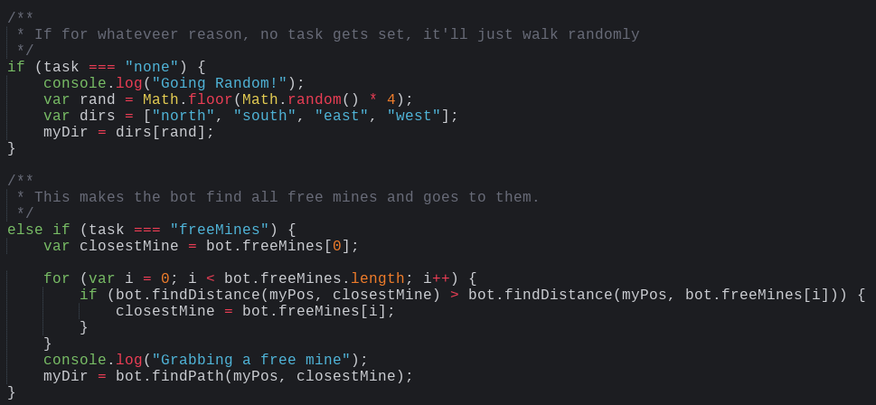

Vindinium is an artifical intelligence-based programming challenge. While the Vindinium challenge comes in many different programming languages, such as C++ and Java, for this project we were using Javascript.
In Vindinium, there are 4 bots which all fight to try to get the most gold. They can attack each other, collect health in exchange for 2 gold, or claim a mine in exchange for 20 health, which generates one gold per turn.
The image above shows all of the global data that I used. I stored many different things in this section. First, I created the variable of myDir, which is the variable that stored the direction that the bot would move in. Then came an array that was called "myPos" which stored the X and Y positions of the bot on the grid. This gave me a reference to my bot's current location. Then, there was an empty variable called enemyBots, which was an array. The next set of if statements made it so that if your bot did not have that ID, it would add a bot with that ID to that position at the array. After that, I created a variable with the name closestBot, which was initially given the value of the first bot. Then, it went through the array of enemyBots, one by one, and checked it against the current closest bot, and if the bot being checked was closer, it set closestBot to that value instead. Then, the next variable, ownedMine, started with the value of the first mine of the first bot. Then, it went through the list of enemy bots, and it takes the first one that has any mines, and goes to steal that bot's first mine.
This next set of code gives the bot instructions on what it should do at certain points in time. First, the variable task is created. Then, if my bot's health is lower than 35, my bot goes to the tavern in order to gain health. Then, if my bot's health is higher than 35, then it moves on to the next option. If there are no free mines, and my bot doesn't own at least one mine, my bot will switch its current task to stealing other mines. And if these conditions aren't met, then my bot will attempt to attack a nearby bot, but only if my bot's life is greater than the closest bot's and if my bot's health is higher than 40. If none of these conditions are met, then my bot will look for free mines to claim.

Well firstly, if for whatever reason, my bot's task got set to none, then my bot would move randomly in random directions.
If my bot's task was to find free mines, and its task was set to freeMines, then the variable closestMine would be created and set to the value of the first free mine. Then, using a similar searching algorithm as the global variables did, it goes through the array of all free mines and it sets closestMine to the closest mine that it can find. Then, it logs "Grabbing a free mine" in the console, allowing for easier debug. And finally, it sets myDir, which is the variable which controls the direction that my bot will travel in, and sets it to the path between my bot's current position and the closest mine.
While this second sets bears many resembalances to the other two, it is slightly different. Firstly, instead of doing the finding algorithm in the task itself, the finding for these two is actually done in the global data area. Then, it logs into the console as well, before finding the path between the global variable and my bot's current position and sending it in that direction. One noteable difference in the attacking code is that because the bot data is stored in an object format, the object has many types of data, and so we need to use posArray in order to extract the bot's location from the object. Additionally in the case of stealing, I also had it print the coordinates of the owned mine for further debugging purposes.
I learned a lot about AI, and how these programs can decision-make. This showed me how much work has to go into such a simple AI, and how much must be needed for a more complex system. However, it also showed me that this type of AI wasn't necessarily as complicated as it sounded. Using if statements, I was able to control when my bot did certain things, and that showed me the basic structure of decision making programming.